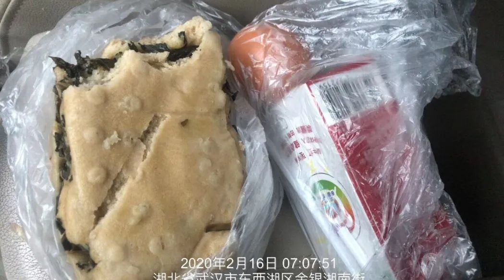
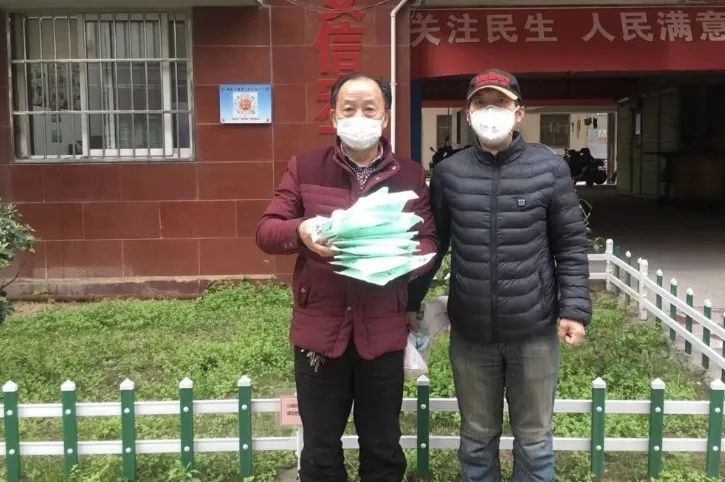
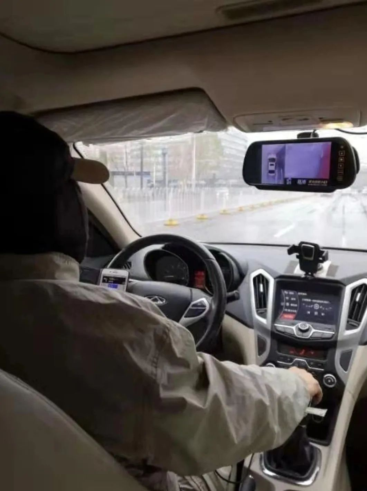
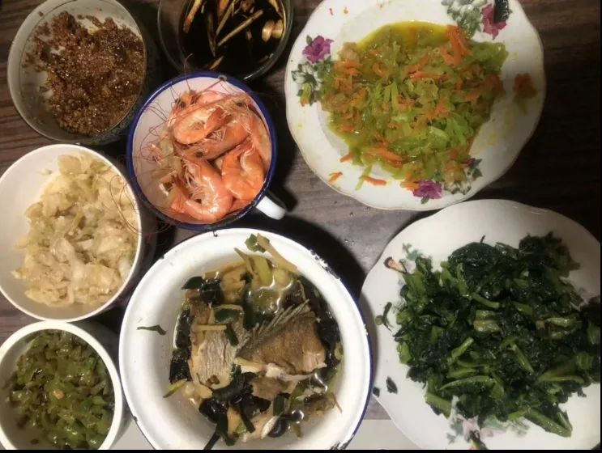
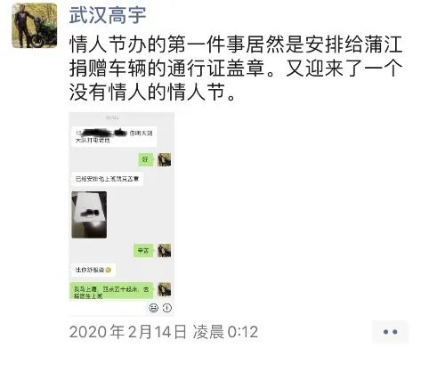

特稿|既是摆渡人又是送餐工 市民互助守护江城
原文链接 备份链接 【财新网】（记者 赵宁 萧辉 汪苏 丁捷）2月17日晚10点，30岁的志愿者司机喻巅送完最后一名护士，匆匆回到家。这是喻巅连续跑车的第24天。1月23日10时起，武汉“封城”，迄今一个月。昔日繁华喧嚷的江城，将滚滚人 …


- 疫 情 之 下 -
如今，针对医护人员的出行难，政府已出台各种措施，但还是有个别的需求难以得到满足。高宇说，他会一直坚持到医护人员交通困难问题缓解的那一天。
”
2020年1月23日，武汉市新型冠状病毒感染的肺炎疫情防控指挥部发布公告，23日10时起，武汉市城市公交、地铁、轮渡、长途客运暂停运营，机场、火车站离汉通道暂时关闭。
这是控制疫情的必要措施。然而，这也给那些需要每天出行的人，尤其是奋战一线的医护工作者，带来了挑战。
1月24日下午2点12分，武汉市民高宇发现这一问题后，没有犹豫，当即就在朋友圈发布了一条信息：“有自愿免费为医护人员提供车辆接送服务的，速度联系我。有较高感染风险，请考虑好。不敢的，帮我转给敢的人。我微信电话同步，求帮转。高宇：****。满屏加油挺住的各位大神，我敢，你们谁陪我一起？”

他人生中最特殊的春节开始了……
1.大年夜，变身“骑士”
高宇，生于1975年，武汉一家4S店的一名管理人员。1月24日，看到交通瘫痪后，很多医护人员一上班就是八个小时以上，下班了却不能及时回家休息，有的甚至要走路一个多小时上下班，他坐不住了，决定上阵。
当时，武汉的志愿者车队建了三个微信群，分为武昌、汉口与汉阳三个区域。高宇家在汉口，于是就进入了汉口群。进群后没多久，高宇就接到了第一单需求，接送湖北省第三人民医院一位急诊科的护士下班回家。
他戴上口罩，穿上雨衣，套上手套与头套，架上护目镜，启动自己的艾瑞泽7，喜庆的红色，开了三年，没毛病。爱车转为拉力车，早已做完消毒，驶出小区，进入愁云惨淡的江城街道。
送达医院，他打开窗子，吹散病毒。第一单结束，自己家也不敢回，就在车里坐着。忽然，微信叮咚一响，原来是刚刚急诊的医生给他发了30元的红包。但高宇拒绝了，“我是义务接送哈。”
随后，他开始返程，来到汉口火车站的家，刚要准备停车。三点半，电话来了，是他的一个交警朋友。微信视频那头声音焦急，“高宇，我正在附近路面执勤，有一个从外地回武汉的医生，出了汉口火车站，在路边拦了一个小时车，拦不到。我请示了领导，本来想送他，可是领导没批准。这不，刚好看到你接送医护的朋友圈，能不能过来接送下啊？”
高宇迅速将艾瑞泽7调转，找到了朋友与医生等待的位置。上车的汪强有点儿疲惫，也有点焦急：“谢谢，我去蔡甸人民医院。”高宇跟他攀谈两句：“家是哪儿的？医院那边发热多不多？”汪强对高宇说：“我是蔡甸人民医院的。本来准备在合肥老家吃年夜饭的，没想到下午就已经收到了火神山要建设的消息，于是马上赶回武汉。正好我们蔡甸，正在抽调力量，而蔡甸人民医院很可能是被抽调的重点……”
大年三十，街道上似乎没有一点气息。从汉口火车站到蔡甸人民医院，二三十公里样子，车内渐渐安静下来，车外是平远的路，丝毫不用担心堵车的状况。

40分钟，车停了，汪强对高宇表示感谢。高宇赞叹：“这个医生相当不容易，好不容易过年了，除夕夜都不能在家吃饭，得赶到医院救治病人，太伟大了。”此后，两人再无联络。那这个医生后来有没有去火神山？高宇也不知道，“开车送人是我的事情，其他的，我哪儿知道呢？”
下午5点12分，高宇从蔡甸赶回汉口，接第三个医生回长港路的家。医生告诉高宇，他一个N95口罩戴了一个礼拜。因为不同科室有不同的量，防护资源不足，他们越发危险，只能拼自己的抵抗力。听罢，高宇这个大老爷们，边开车边流下了热泪。
随后，他又接送了两次医护人员，横跨江汉、江岸、汉阳、武昌、蔡甸几个区。等到送完当天最后一位乘客，已是晚上6点多。他给自己的艾瑞泽7加满油，却不知接下来该去哪儿。
疫情刚开始确定，整个城市在全力备战，空气中弥漫着恐慌、紧张的情绪，这个春节完全没有往年的氛围。高宇担心自己有感染的风险，同时也不想让家人知道自己在做的事情而担心。大年三十的晚上，高宇决定不回家吃年夜饭。反正他回家吃晚饭的日子本来就少，家里的父母也不会怀疑，单身一个人的生活容易搞定。
令他感动的是，他的朋友江汉交通大队付勇队长得知他没有回家吃年夜饭，连忙煮了饺子送给他，高宇开车回小区停车场，吃了这一碗特别的年夜饭。
晚上7点45分，他接到了一个女护士的单子，“明天七点出门，大概八点上班。”高宇回复，“准时来接。”
空荡荡的街道，没有鞭炮齐鸣，没有锣鼓喧嚣，很安静的夜晚，回到家中，过完了十二点，阴历年里，他45岁了。

2.城市之光，一起逆行
1月25日一大早，高宇将自己的防护装备做了升级，将帽子换成了摩托车头盔。
6：51分，他提前到达约定地点，开了双闪等待医护。送到中心医院后，医护一定要送个口罩给高宇。高宇坚决不要。结果，她偷偷扔到了高宇的车上。
接着，他接到了一对母女。妈妈在同济，女儿在古田路四医院上班。她们在路上走了快一个小时，才联系到高宇。沿途的空的士，一听说是要去医院，都不愿意载她们。高宇将两位先后送达。
晚上9点35分，他送完最后一位医护，厚着脸皮让朋友下了一碗面。等车子即将到达时，他叮嘱朋友：“我不进小区了，你把面放在我车前盖上，不要跟我讲话，有话微信说……”江湖夜雨，灯火阑珊，他吃完了这碗“最好吃”的面，一口不剩。
1月26日早上，群里有一个护士昨夜叫车，她要从古田二路到蔡甸中法医院。
高宇接到了她。车上，护士袁凌纯感慨，封城后，没有了公交，一个人上班要走三个半小时，而她单位一个同事，更是走了四个小时上班。
高宇说，“这也太远了吧！”袁凌纯说：“可是，必须去啊！如果不去的话，别人下不了班，我要去接班的。”
高宇沉默了。
送达后，高宇说：“你要是下班不方便，可以群里叫我。”当夜，高宇护送袁凌纯回家。原来，她是同济医院的，这天在中法医院参加培训。
时间一长，高宇就发现了医护人员的痛点。为了解决医护人员的上下班难题，医院设定了固定班车。但是，上下班只有一趟，行经线路与站点停靠时间都是固定的。如果要赶班车，医护人员就要步行到集合地点，有的离家会比较远，甚至有七八公里。而且，上班是统一的时间点，高宇只能接到一二个，下班就很难一致了。但是，下班时间又比较灵活，他一个人可以载几个人回去，前提是，只要对方愿意等。

每日出门，高宇会在车里储备些许酸奶、点心、面包等，肚子饿了，就吃一点。晚上回家，则有妈妈做的晚餐，简单热一热，吃饭完，他又开始处理群里的消息，定好明日一早接送医护的人数与行程。
原先的群是分区域的，高宇发现这对跨越武汉三镇的医护人员上下班不利，于是他干脆建了一个群，不分区域远近，无条件地接送。很快，大群满了，为方便管理，又分了两个小群。一个是医护人员，另一个是司机。这样，他实现了医护需求与志愿司机的一一对接。没过多久，医护群就达到了三百多人。
2月4日，上午8点6分，他看到消息，有个年轻的男医生刘羽，从汉口姑嫂树到武昌省妇幼医院，叫不到车。当时，他刚送完另一个医生，发现群里有消息，赶紧联系对方。刘羽说：“我发了群消息，等了许久，看到没有人载我，现在已经骑了个摩拜，上了二环线，准备骑车过江。”高宇让他把位置共享打开，马上开车去二环线解救他。8点16分，在二环线上，他接到了刘羽。刘羽将摩拜单车放到路边，坐到了后座位上，赶赴医院。
晚上9点半，武汉十一医院，高宇接到了一位刚下夜班的特殊医护人员。“向这位主动申请来支援武汉的四川广源医生致敬，她说武汉人之前支援过汶川，她应来报答武汉人。”
除了接送医护人员，他的业务还有送防护服、医疗器材等，简直无所不包……

3.汉口“老杆”的原则
这已经不是高宇第一次做爱心救助活动了。
高宇是个汉口老杆，今年45岁。他喜欢摄影，从最起初的拍婚庆，到进入职业圈子，已有十年。不过，他更爱的是越野车与摩托车，在武汉的越野与摩友俱乐部，小有名气。
“老杆”，是由武汉流氓话“老枪”演变而来，指的是汉口原住民中的中年男人。高宇面相显得老成，“朋友多、讲义气、有面子”，可叫老杆。武汉民俗学家葛亮说，比“老杆”年轻一点的是“竹杆”，再老可叫“老蔑皮”“老豁皮”。有人说，武汉的“老杆”，比魔都的“老克拉”多了嬉笑怒骂的务实感；比雾都的“袍哥”少了混迹社会的老规矩；比帝都的“老炮”更服膺生活的真相。大抵差不多。
高宇出生在老汉口的高知家庭，家里有一个姐姐，已经嫁人。妈妈是位老医生，吉林人，先后在解放军野战医院、中山医院等工作。父亲是武汉人，高级建筑工程师。作为医生的家属，他心里自觉就负担着一份责任。
在朋友眼中，他颇有侠气。2016年夏，高宇的车友与爱人在路途中，不小心翻车掉入了灌木丛生的山崖下。当时，他正在武汉上班，看到消息后，马上从武汉赶去大悟娘娘山。到达现场，几个消防官兵将车友的爱人用担架抬了上来，行将耗尽体力。旁边围观了许多人，却无能为力，只能干等着。高宇二话不说，喊一声“让我来”，身上捆了绳子，赶紧下去。他与另外三个消防官兵，将受伤的车友一起抬了上去，骨折的地方因而能及时送到医院施救。
2017年夏，武汉雨季，汤逊湖发生洪水。一个傍晚，玩车的群里，一位车友老家紧急求援，他的老家在武汉郊区的新洲凤凰镇，水灾影响到了城镇生活。高宇看到了，马上与几个朋友一起号召捐款，第二天早上，就赶去超市买食物与物资等。一行人，十几台车开过去，解了灾区的燃眉之急。
作为一名“老杆”，因为个性直爽，喜欢张口就喷人，朋友送他一个外号“喷子哥”。2019年9月，武汉市发布“最严禁摩令”，扩大摩托车禁行范围，禁止摩托车进入三环线……然而不久，知音号上举行了一场41对的集体婚礼，游轮上摆放着几十辆摩托车。高宇开怼了，“这不就是明令禁止，却公开违反吗?还有脸大肆宣传？”他认为，知音号属于一环以内，而结婚不属于紧急公务。经过这一喷，众多网友支持他，有那么几天，他一下子成了网红。
封城后，加入解救上下班困难的医护人员志愿者行列的他，不是空有满腔热血，而是有着自己的“资本”。
2007年，他集中锻炼过半年，身体一直很健康，用他的话就是“基础打得好”。他的微信头像都是与摩托车的合影，平头，眼神锐利而坚定，洁白干练的T恤衫，坐在草地上，背后是敦实的摩托车。平时，他喜欢跟摩友们一起骑长途摩旅，高速800公里，国道500公里，他都跑过。“经历过长久摩托驾驶的人，再开汽车，就要舒服很多了。没得比！”他的口气云淡风轻。
接送医护人员最早的一周，高宇每天只能睡三小时，五六点出门，等到睡觉已经是凌晨三点。他回家就比较晚，还要处理群里消息，白天也很少睡，接送医护到第三天时，精神头就不太足。二十来天的接送中，有两天的中午十二点发困，他就打电话给医护，“不好意思，你另外找个人，我要休息下。”随后，他在车上咪半小时，继续投入到战斗中。最多的一次，高宇一天接送了二十多个医护人员。

并不是每一个志愿者都有他的健壮体格，也并不是每个志愿者都有一颗无私的心。
时间久了，高宇发现，有的志愿者不愿意接社区服务中心，有的人是有条件的，收费不说，更是“远了不接，早了不接，晚了不接，小医院不接，男的不接”，而他的原则是“不管多远，只要等我，我就去”。
高宇记得，他接的最长的一个单子，跑了70公里，是从武汉最西边的东西湖十三支沟，送到左岭的120医护急救站。这个120的护士，是几班倒，先上两天两夜班，再休息三天。
高宇的举动也感动了很多医生，有的坐高宇车的医生会给他带一份早餐，牛肉面或者热干面或者油条，有的会送他一副口罩，或者一盒牛奶，提醒他注意身体。有几个护士曾给他私下发红包，但是，高宇全部拒收了。他对她们说：“我只是尽一份自己的力量，不想让你们上下班步行，不想让你们骑单车。”

每一趟接送之后，他会用装了75%酒精的喷壶，把车子全部喷一遍消毒，然后开车门通风三十分钟左右，再去接下一单的乘客。
从早上忙到晚上九点半才算完毕，回家妈妈已经热好了饭菜。进门前，高宇把防护服脱掉、口罩摘下处理消毒。为了安全，这些天他一直把自己和家人隔离开来。

4.我不是英雄，也不是圣人
“你建个平台才三百人？我建的三个微信群都千把人了，我和你有什么好规划的，你是为了赚钱，说那么好听干啥？你的平台好用你自己用，平台再好，人是不是不用司机开车送？用平台送？三点半你的平台能出车不？”2月5日，高宇狠狠地怼了一个邀请他加入的平台推广人。

起初，他找了几个女志愿者帮忙处理群里工作，可以更快对接医护人员的用车。等到晚上回家，他就来接管。然而，因为工作繁琐等，志愿者先后退出，只剩下高宇自己管理全部。接送医护，他有自己的审核准则：1、发工作牌照片（或其他证件照片）。2、车上和他合影（眼睛看镜头，避免说偷拍）。以上两点做不到，不好意思，请另外找车。
2月4日，高宇接到一位护士，上车后他要求拍个合影。护士一直低着头，高宇道，请把头抬起来。她问，为什么拍照要抬头?高宇说，怕说我是偷拍的。然后，她抬起了头，扭向了窗外。接着，高宇叫她下车。她问，为什么?高宇道，我累了。她又问，那我没车怎么回家？高宇说，我怎么知道。然后，他当她的面删了照片，她又要高宇删了她微信，并检查手机相册（怕他存了）。高宇照办。然后，她下车了。
对此，高宇有自己的道理，“我不是英雄，也不是圣人，我只尽义务做一点力所能及的事情。我个人做这个事情，个人定了这个流程，而且我也不需要解释。为什么要拍合照，能接受的，就送，不能接受，自己想办法。认识我的人，都知道，我脾气不好，所以不要认为我有多好，我也不会在意旁人怎么看我。”
5.一场疫情，世间百态
2月3日，志愿者何辉因感染新冠肺炎去世，一些志愿者很伤心。事实上，面对新冠状病毒的肆虐，当时最早一批的志愿者，能够坚持下来的也少了，新加入的志愿者也在后浪推前浪。
对于何辉的去世，高宇表示惋惜，“他可能之前就感染了，只跑了两三天的车子。很多人问我为什么不怕感染新冠肺炎，其实我想说：我这种没心没肺的人，没有肺，拿什么感染？当然不怕了。”志愿者们相互间比较独立，各接各的单子，不是一个整体，只是殊途同归。
对于社区，高宇是既理解其人数少难办事的苦衷，又恨铁不成钢。政府下发文件，要求社区宣传优先安排接送医护人员，结果，不少社区做不到接送医护人员。有的不但不送，还把高宇的电话直接给医护人员。高宇找对方理论，原来因为怕感染，司机所在的公司不允许派到社区的司机接送医护人员。同时，又拍照拍视频宣传在社区接送医护人员……
高宇愤愤不平，“拿了钱不干活还想听大家的赞美，然后我们这些非各大公司平台的傻子司机去接送，还直接把我的电话给医护人员。最搞笑的就是，汉阳某社区自己有车不安排，社区的工作人员联系我一个住江汉的，要我帮接送，我是看在医护人员造业，送了，还是从汉阳送盘龙城。这些事，社区干部有点无奈，社区压力大，根子在那些拿了钱的各种车的平台，平台靠这赚钱，还想趁机会露脸打广告。”

令高宇心灰意冷的时候不止这一次。
2月4日晚上，他接到了一个护士跟他谈价格，而原因是其爱人想省一点点油钱。他怒了，“我每天起早贪黑不吃不睡为什么？为了当英雄？为了一声谢谢？为了骗医护人员一个戴口罩的合影？我是冒着生命危险啊，包括我父母的生命啊！你自己有车不想开车送老婆就算了，你连钱都想省？其实我送了这么多天，我早看出来了，哪一个小区都不便宜，但凡结了婚的，家里肯定是有车的，就算有些家里有特殊情况，但是有车不开等着我们免费送的一定还有。但是我不想说，我还是能送就送，装个苕（武汉话，傻子）。”
于是，他开始对每位用车人员多花点时间了解情况，确保每位是真的需要用车。
2月5日，有好心人提醒他，“高宇兄弟，武汉疫情比我们想象的严重。上次你送的那个医生2月1日被感染了，目前医院床位紧缺，都吃药在家自行隔离。你一定要引起重视，注意防护啦！”随后，他拍了一段自拍视频，发到朋友圈，“万一我挂了，你们可以看一下我最后的样子。”
这天，他所在的小区贴出公号，“我们小区现在有发热病人5例，已送走一个，这六例分别是……”高宇看了下，还好，没有他所在的单元。
6.没有情人的情人节
早在1月25日中午，在得知高宇接送医护之时，高宇的母亲表示了强烈反对，“你要做什么？你在家里不出去，就是对抗病毒最好的方式。你不要好心帮倒忙，就听一下我这个当了一辈子医生的妈妈的话吧！”高宇回复：“我没事，我抵抗力好。”
后来，看着高宇固执不变，高宇妈妈就没有办法，拦不住，也就随他去了。

其实，在参与接送医护人员之前，他就做了最坏的打算：“我就是抱着肯定会被感染的心态来做这个事，就是说假设我最后被感染了，但我不会有生命危险，我是可以被治愈的，所以我不害怕。”
2月6日下午，妈妈感冒了，家里没人照顾做饭，高宇只好暂停出车。他下厨炒菜，照顾妈妈。他自嘲，“开得一手好车，扯得一手好皮，下得一手好面。”
12号，母亲感冒病愈。缺席5天后，看到志愿者车队开始减少，他决定再次逆行，王者归来。“兄弟们坚持两天，这几天车子越来越少，你们辛苦了。我马上归队。”
这天，高宇遇到了一位“违约”的医护人员。中午两点多，他接到了亚心医院护士方玲的约车，晚上六点左右出发，返回汉阳七里庙家中。结果，高宇送完上一位护士人员后，提前到。到了六点钟，方玲打电话不接，微信不回。一直到七点四十，又有一个护士叫车，他只好抱歉。“我只能走了，不能让下一个也等。”后来，方玲联系到他，对他表示抱歉，刚刚一直在加班。高宇开玩笑，“刚刚放我鸽子的，现在我再从硚口去沌口接她。虐我千百遍，如初恋。”
2月14日凌晨转钟，与往年鲜花美酒饭局种种浪漫不同的是，疫情下，同守一室的夫妻恋人依偎着，同城却不能彼此相见的情人们（哪怕是隔离者）通过电话、视频形式开始“云约会”。年已45岁的高宇依然是过着单身一人的生活。他曾有过不合适的爱情，但“因为穷”，且将积蓄都奉献给了摩托与车子，买不起房，始终没有进入婚姻。
他感慨，“情人节办的第一件事居然是安排给蒲江捐赠车辆的通行证盖章，又迎来了一个没有情人的情人节。”

4点50分起床，5点一刻出门，天色依然是黑漆漆的。5点29分，他在解放大道接到了一位，还要等待另外两位医护的前来。5点54分，先送到武汉市一医院。6点13分，送到汉阳医院。
他将脑袋用黑头套包裹起来，戴上帽子，半个白色口罩露在外面，只留两只眼睛与小半个额头，有点儿克里斯托弗·诺兰电影中蝙蝠侠黑暗骑士的样子。
其后，在接送医护人员的空袭，他还抽空为江汉大队给蒲江捐赠车队的司机们开通行证明盖章，并将车队送到岱黄高速入口，看着这一队运送救援物资的车辆驶出，有一位一线警员默默地向所有援助武汉的同胞们致敬。
这天，他的轨迹遍布武汉多家医院，有一医院、汉阳医院、儿童医院、中山医院、同济医院、武汉紫荆医院、四医院、六医院，而接送医护人员达十余位。
傍晚六点，中央气象台发布暴雪蓝色预警：预计2月14日20时至15日20时，辽宁中东部、吉林东南部、山东北部、湖北东北部和西部山区、安徽大别山区等地有大雪。
暗夜渐深，外头开始狂风怒号，电闪雷鸣，似乎要将天地劈开。高宇总结道，“今天任务完成的不错，明天早上一点不到起床出车。我不相信官宣的24小时待命，我只相信我自己24小时出车，我从不待命，直接出车。”
2月15日一大早，武汉城区，雪花纷纷扬扬，天地为之一新，道路滑冻，行驶分外小心。
中午12点3分，武昌区南湖长虹桥，高宇接到一个女护士，“她每天骑一个半小时自行车上下班，今天下雪，不能骑车。”二十二分钟后，他抵达仁寿路社区卫生服务站。这里，高宇接送过十几号人。
高宇说，各大平台都在服务医护人员，但并不能够覆盖全部人群。譬如，最大的网约车平台滴滴，其接送医护方面，像同济协和类的大医院有500个名额，一般医院有200个名额，社区卫生服务站就属于三不管地带，不仅没有名额，志愿者也不太愿意接。
夜色里，雪依然在下。高宇仍然在路上。空旷的街道上，武汉大道两侧的高楼闪耀着血红色的通体的灯，上面用黄色字体写着“武汉必胜”“中国必胜”。
2月15日晚上，风雪夜归。9点45分，他在群里@所有人，“明天早上6点20分准时在武胜路四医院门口集合上车，过时不候，收到请回复。”很快，群里有4个医护人员先后回复“收到”。高宇自我嘲讽，“硬生生把自己从一个黑的士玩成了黑巴士。”
2月16日早上，高宇今天又接到了袁凌纯。高宇问：“换地方了？”袁凌纯说：“我是同济本部的，上回是去中法医院那边参加培训。这回到本部，距离上就近一点啦！辛苦你啦！”
如今，针对医护人员的出行难，政府已经出台了各种措施，但还是有个别的需求难以得到满足。高宇说，他会一直坚持到医护人员交通困难问题缓解的那一天。
在今天的武汉，高宇只是众多默默为抗击疫情做贡献的普通人之一。身边像他这样义务接送医护人员的私家车司机不下200人，其中有十余位在他的影响下，加入了志愿者行列。他们说，“高大哥，我想和你一样。”
（除高宇外均为化名）
-END-
图文 | 舒怀，青年作者
/《大武汉美食榜》主编，资深媒体人，美食博主。/
华中科技大学出版社·武汉战“疫”数博馆
抗击新型冠状病毒感染肺炎疫情作品资料正在征集中——
【征集要求】
＊来稿应为未公开发表和出版的内容，题材不限，
VLOG、文字、图片等均可，务必客观真实，
反映疫情当下的民生现况及个人见闻；
＊提供作品者都将获得华中科技大学出版社提供的“宅家悦读大礼包”；
＊作品一旦录用，将提供完整规范的版权保护。
【投稿方式】
音视频：2279281426@qq.com
文字：423322329@qq.com
图片：454578039@qq.com
或点击下方链接直接投稿
http://2019ncov.xiushewang.com/
请务必留下真实姓名及详细联系方式。
“我故”故事练习生培养计划，详情请戳：

About us
主编：鹿｜本期编辑：鹿
Contact us
投稿/商务合作/咨询
微信后台留言 or 邮箱：wmsygsdr@163.com
**我们是有故事的人｜华中科技大学出版社官方故事平台**
原文链接 备份链接 【财新网】（记者 赵宁 萧辉 汪苏 丁捷）2月17日晚10点，30岁的志愿者司机喻巅送完最后一名护士，匆匆回到家。这是喻巅连续跑车的第24天。1月23日10时起，武汉“封城”，迄今一个月。昔日繁华喧嚷的江城，将滚滚人 …
原文链接 备份链接 2月17日的武汉，封城限行的第26天。 胡建斌觉得有些恍惚。 车窗外，夜幕下，路灯闪闪发亮，成串的红灯笼挂满道路两旁，路面没有了往日的车水马龙，许久都看不到一位行人。一辆警务车从对面匆匆驶过，路的尽头，高楼外壁上火红的 …
原文链接 备份链接 “ - 疫 情 之 下 - 武汉的疫情就像一簇紧簇的乌云，笼罩在每一个人的心头。但所幸，在这个受伤的城市中，在每台志愿者车里，在疲于奔波的路上，总有那么一群可爱的人，温暖着我们前线医护工作者的心。 ” 1 2020年 …
原文链接 备份链接 一座看似静止的城市 背后涌动着生命希望 上午九点，钱志红准时走进自己的办公室，自武汉疫情爆发以来，他几乎没有停止过工作。将近一个月时间里，作为国美安迅物流湖北分公司的总经理，突如其来的援助任务要求他必须像钉子一样钉 …
原文链接 备份链接 我先跳过2月21日-26日，在武汉的街头见闻，将27日-29日，2月这最后三天的情况，日常见闻发在这里吧。 此前的文章 《武汉，这些天的街头巷尾》，以及《武汉，这些天来的街头巷尾（之二）》。 2月27日 26号，武 …